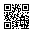

Chapter
英文読解の基本、文法・語法、発展読解、医系語彙へと学習段階を大きく分けます。
Crossoverは、医学部合格を目指す高校生・既卒生のための英単語帳です。
入試英文を読むための基礎語から、論理・学術・医系の語彙までを段階的に配置しています。あなたが今いる段階から始め、難しい英文へ無理なく橋を架けてください。
この名前には二つの意味を込めています。一つは、基礎語から学術語・医系語へと段階を越えて進むこと。もう一つは、一語の意味・用法・例文・語族を行き来し、知識をつなげることです。単語を孤立した訳語としてではなく、英文の中で働く語として身につけましょう。
最初からすべてを覚え切ろうとせず、見出し語と中心義を確認して先へ進み、短い間隔で何度も戻ってください。既卒生・受験学年の人は1日1 Groupを目安に、まず全体を速く回します。受験まで時間のある人は1日2〜3 Sectionを目安に、例文や語族まで丁寧にたどりましょう。
紙面では全体を見渡し、Webアプリでは発音・検索・ナンバージャンプを使えます。二つの学び方を行き来しながら、自分の弱点に合わせて繰り返してください。
Crossoverは、3,000語を6 Chapters・25 Groups・150 Sectionsに整理しています。1 Sectionは原則20見出し語です。
英文読解の基本、文法・語法、発展読解、医系語彙へと学習段階を大きく分けます。
尺度・評価、思考・表現、構文、生命・防御など、語の働きや分野でまとめた周回単位です。
毎日の学習と復習に使う最小単位です。原則20語なので、進捗を一定に保てます。
番号、見出し語、発音、意味、例文・フレーズ、派生語、注意点、関連語を一つにまとめます。
バッジは、難易度を競う印ではなく、「この語のどこに注意して覚えるか」を短く示す道標です。
意味：語彙レベルの目安です。A1からC2へ進むほど高度になります。Oxford 5000の値を優先し、対象外の語には暫定値を示す場合があります。
学び方：未習レベルでも飛ばす必要はありません。例文を読めるか、実際に使えるかを判断する参考にしてください。入試での難易度と完全には一致しません。
例：issueはB1、accommodateはB2です。
意味：Academic Word Listに含まれる学術語です。数字が小さいSublistほど、学術文書で広く頻繁に現れる語群です。
学び方：評論・科学・医学系英文で繰り返し出会う語として、中心義だけでなくコロケーションも確認しましょう。
例：issueはSublist 1、accommodateはSublist 9です。
着眼点：同じ動詞が、もの自体の変化を表す自動詞と、誰かがものを変化させる他動詞の両方で使われます。自動詞文の主語が、他動詞文では目的語になります。
学び方：「何かが〜する／誰かが何かを〜する」という二つの文型を、同じ名詞を使って並べます。
例：The number increased.「数が増えた」／They increased the number.「彼らは数を増やした」。The glass broke.「グラスが割れた」／She broke the glass.「彼女がグラスを割った」。
着眼点：重なる子音、脱落しやすい文字、似た語との違いです。学び方：誤りやすい部分を区切って書きます。例：accommodateはcとmがともに二つです。
着眼点：母音・子音の音、黙字、品詞による違いです。学び方：発音記号を見て音声を聞き、声に出します。例：recordは名詞と動詞で発音が変わります。
着眼点：最も強く読む音節と、品詞による移動です。学び方：強勢のある音節を大きく読みます。例：recordは名詞で前、動詞で後ろに強勢があります。
着眼点：一つの中心イメージから広がる複数の意味です。学び方：訳語を別々に暗記せず、品詞と例文を手掛かりに結びつけます。例：issueの「問題」「発行物」「発行する」。
着眼点：原形だけでなく活用形と意味の組み合わせです。学び方：三つの形を音のまとまりで覚えます。例：「横たわる」はlie–lay–lain、「うそをつく」はlie–lied–lied。
着眼点：目的語、to不定詞、動名詞、前置詞などです。学び方：単語単体ではなく文型・連語で覚えます。例：allow O to Vとallow V-ing。
同じ語幹から生まれた別品詞などです。見出し語とセットで語族を広げます。
規則から外れる複数形・比較変化・活用などを示します。形をまとめて確認します。
近い意味を持つ語です。意味の重なりだけでなく、文体・強さ・使える文型の差を比べます。
反対の意味を持つ語です。対で覚え、意味の軸をはっきりさせます。
同じ話題や概念で結びつく語です。読解時に一緒に現れる語彙群として整理します。
接頭辞・語根・接尾辞など、語の成り立ちです。未知語を推測する手掛かりにします。
訳し分け、構文、コロケーション、混同しやすい点など、補助的な学習情報です。

スマートフォンまたはタブレットのカメラで読み取ると、Crossoverが開きます。
https://vocab.lrnr.jp/
ホーム画面から通常のアプリのように開けます。閲覧・発音にはインターネット接続が必要です。
単語がまだ登録されていません。設定ページから追加できます。